The quick snapshot
Stay details
Hotel / Airbnb
Name: Pogo Hostel
Area: Vilnius
What I liked: This stay came out of pure exhaustion in the best way possible. After a park picnic turned into both of us falling asleep, booking a hostel for the night felt like the perfect spontaneous decision. It gave us a chance to rest, reset, and keep exploring instead of cutting the day short.
What I didn’t: Nothing really — it was simple, affordable, and exactly what we needed in that moment.
Booking notes
- Price: $14.00
- Best part: It let us turn a day trip into a little overnight adventure
- Good fit for: Young, flexible travel where convenience matters more than luxury
- Overall: One of those last-minute decisions that made the trip even better
Getting there
Travel: Flew in from Riga
Travel cost: $34.00
Rental car: None
Arrival notes: We had the sweetest Uber driver who basically turned the ride into a free mini tour and told us all the best places to see. The airport is not far from Old Town or the castles, which made the city feel easy and accessible right away.
Recommendation: Yes, absolutely. The flight is almost comically short, and it makes Vilnius such an easy add-on. Next time, I might consider taking a train just to see more of the countryside, but the flight was perfect too.
The pictures I want to keep with the trip
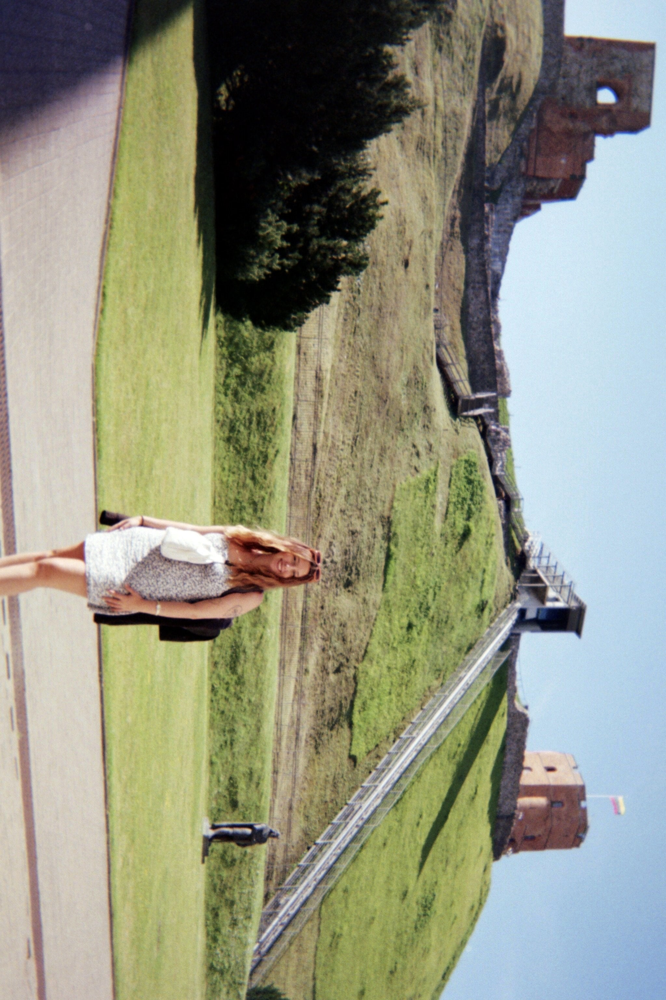
Gediminas’ Hill was our first real introduction to Vilnius, effectively setting the bar unfairly high.
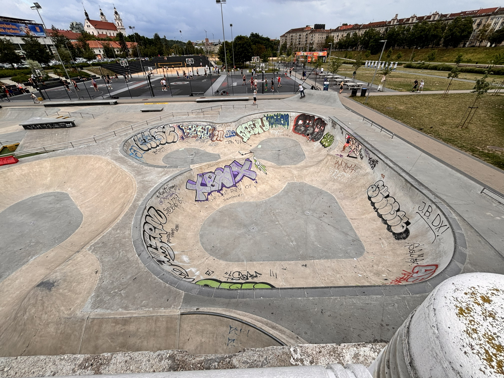
The skatepark where we sat for a while, fully impressed by the fearless Lithuanian kids doing tricks like gravity was optional.
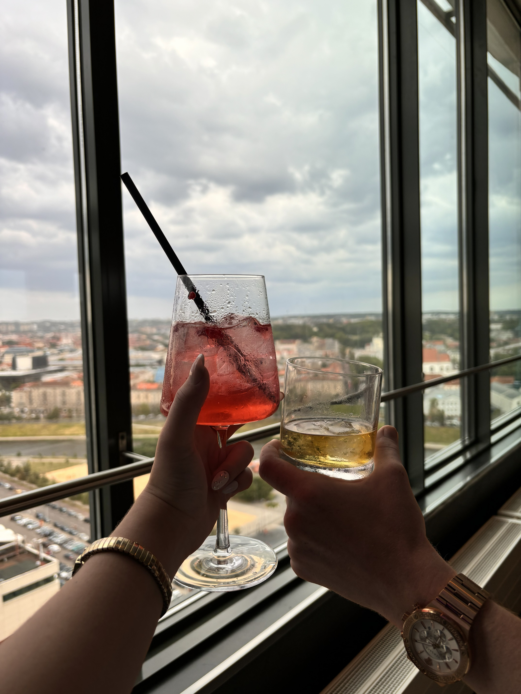
Skybar drinks with the whole city stretched out underneath us. No matter the city, skybar is always a hit in this household.
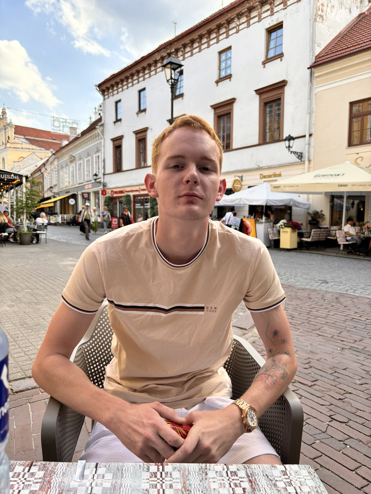
Moments before an embarassing disaster caused by an imaginary language barrier.
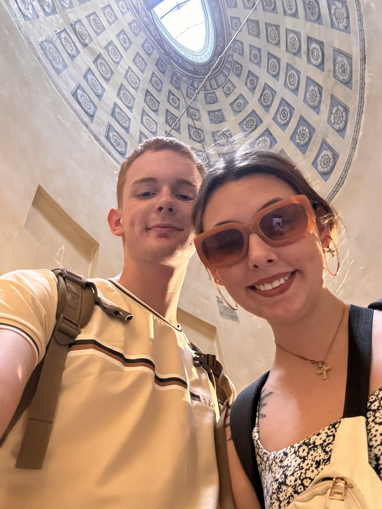
Church selfie! Unfortunately these sunglasses went to be with Jesus a few short days later in the ocean.
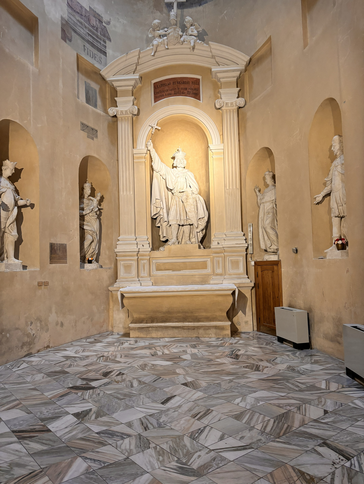
Churches older than some U.S. cities will never cease to amaze me.
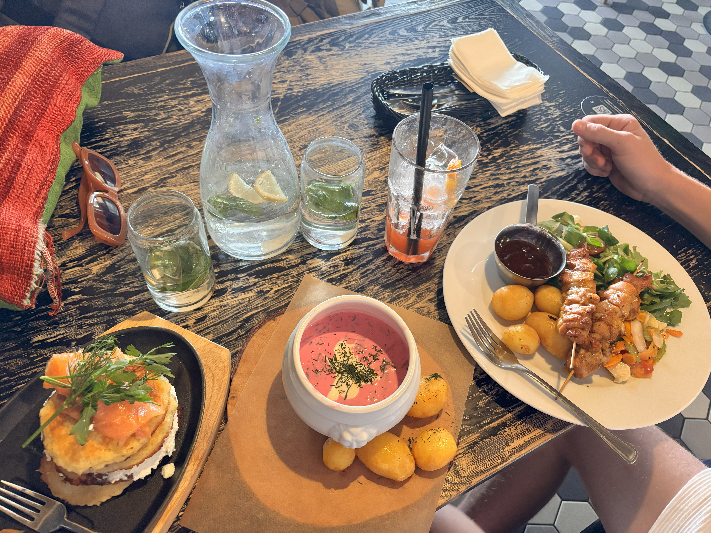
One of my favorite meals of all time, shared with one of my favorite people of all time.
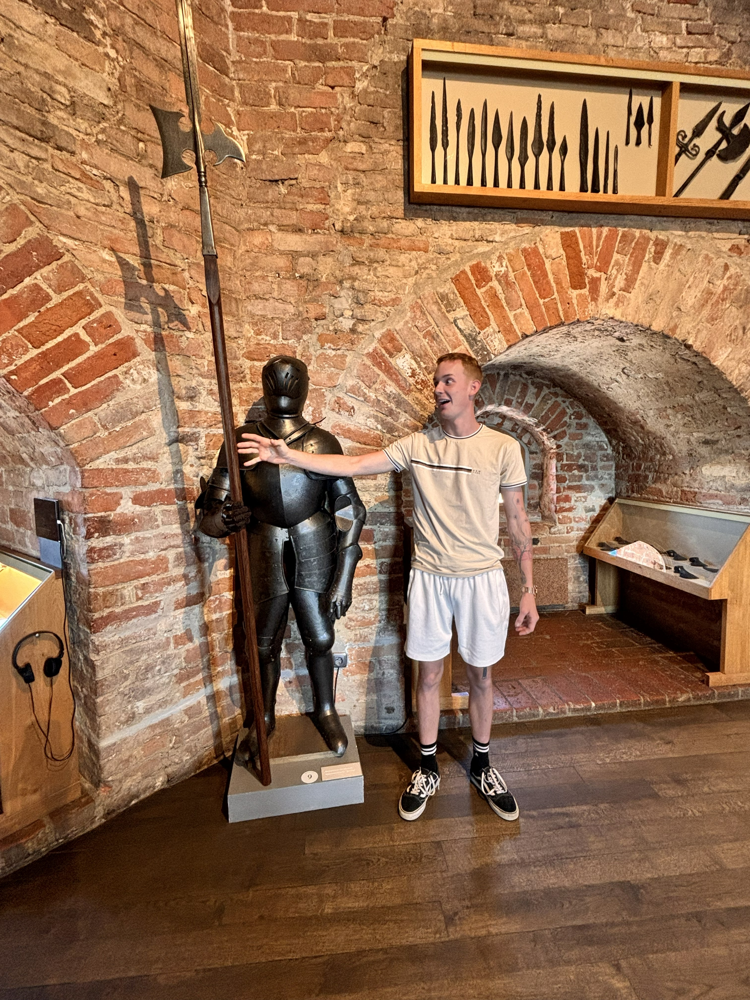
Breaking news: American military man poses with Lithuanian armor and discovers he is two feet taller.
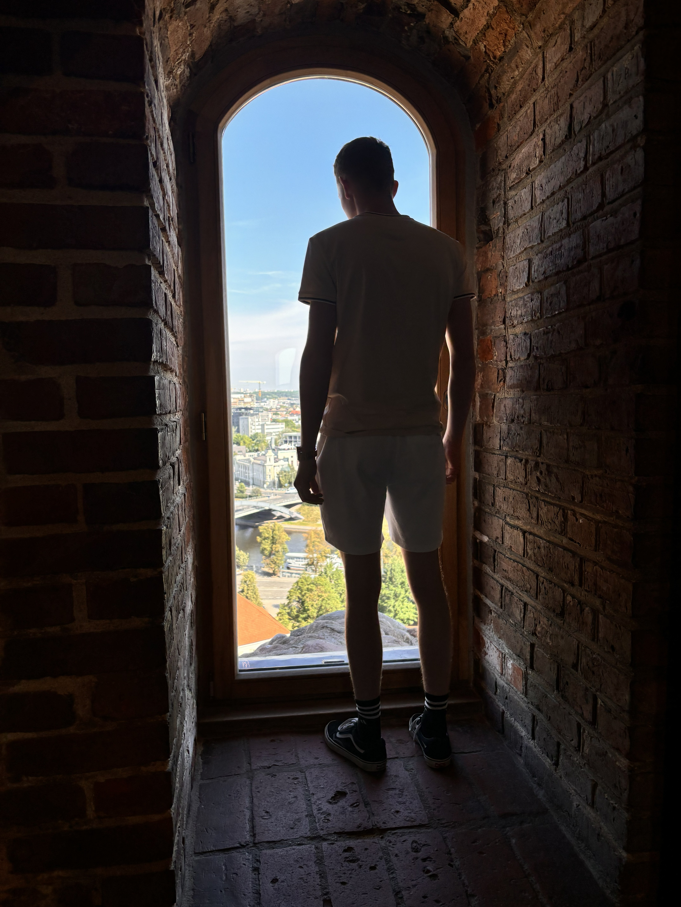
Check out the size of these castle windows!
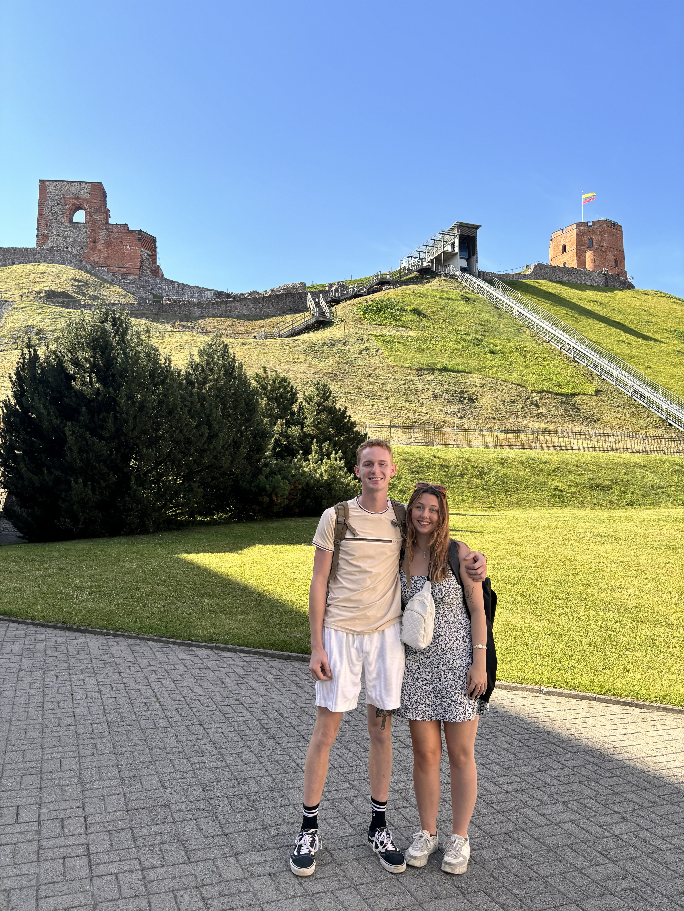
Us on Gediminas’ Hill, sweaty and happy and very glad we decided the tickets were worth it.
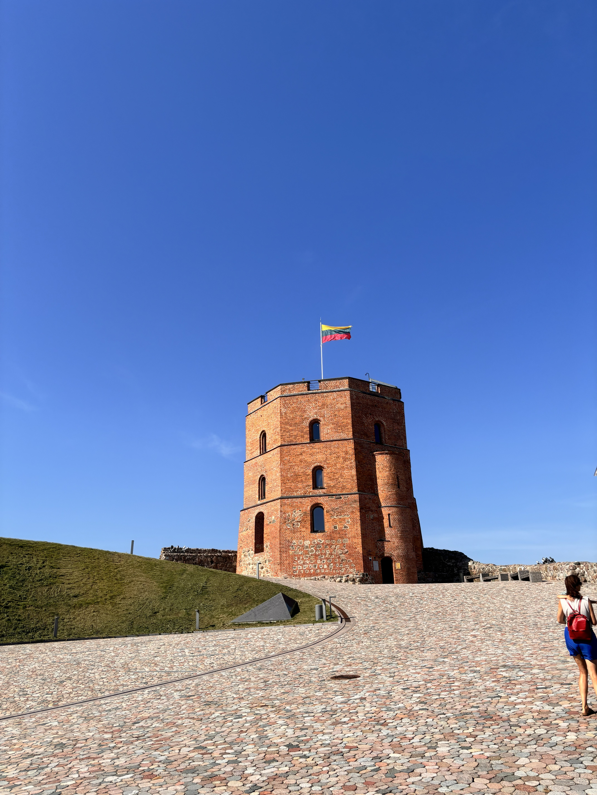
Gediminas’ Tower under the clearest blue sky.
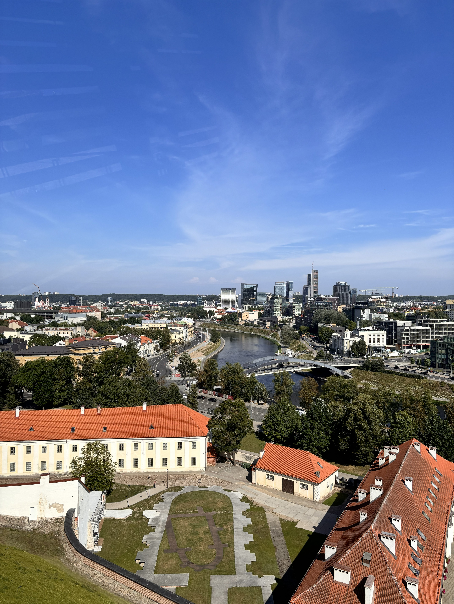
Vilnius from above. This was the moment I began mentally packing my bags to move.
Where we ate and what we ordered
Food notes
Overall food take
Everything about Vilnius felt easy to love, and the food was definitely a part of that. Each dish was both charming and filling, making me homesick for a city I had not yet explored.
What we did, day by day
Day 1
Date: July 11, 2024
Main plan: Explore Vilnius Old Town, wander through the castles, churches, art-filled corners, and city streets, then relax in the park and keep the day going however it wanted to unfold.
Best part: Realizing almost immediately that Vilnius was not just pretty — it was genuinely magical.
Worth repeating? Absolutely
Little moment I do not want to forget
Memory: We were so tired that we both fell asleep after a picnic in the park, then woke up and decided to just book a hostel for the night and keep going.
Why it mattered: It turned the whole stop into something more spontaneous, more relaxed, and somehow even more fun.
Worth keeping? Definitely
Later that day
Main plan: Explore more by scooter, hang out with other people our age at a skate park, shop around, and end the day at the Skybar.
Best part: The energy of the city — youthful, fearless, artistic, and so easy to enjoy.
Worth repeating? In a heartbeat